Sistema de Gestión de Operaciones Pesqueras y Desembarque.
Práctica integradora PC3 · React, Bootstrap y servicios REST
| Curso | ________________________________ |
| Docente | ________________________________ |
| Integrantes |
1. ______________________________ 2. ______________________________ 3. ______________________________ 4. ______________________________ 5. ______________________________ |
| Repositorio | https://github.com/KevinDC65/PescaControl |
| Fecha | Diciembre de 2026 |
PescaControl permite a la jefatura de desembarque de un puerto pesquero
registrar cada desembarque (embarcación, matrícula, especie, arte de pesca, toneladas,
precio por tonelada, puerto, destino y estado de la descarga), consultarlos, editarlos y
eliminarlos, y seguir la operación desde un panel con indicadores. Los datos se guardan en un
servidor REST simulado con json-server a partir del archivo
db.json.
La interfaz funciona como una aplicación de trabajo: barra lateral de navegación (barra
inferior en el celular), búsqueda global y comandos con Ctrl+K, atajos de
teclado, notificaciones de confirmación, lista de desembarques en tabla o tarjetas, detalle
en un panel lateral, y tema claro y oscuro.
Cada desembarque tiene la siguiente estructura:
| Campo | Tipo | Regla |
|---|---|---|
codigo |
texto | Obligatorio y único, formato DSB-000 |
embarcacion |
texto | Nombre de la embarcación, 3 a 60 caracteres |
matricula |
texto | Formato AA-00000-AA; el prefijo es la capitanía (CE, CO, PT…) |
especie / artePesca |
texto | Anchoveta, Jurel, Caballa, Bonito, Perico, Pota, Merluza / Cerco, Arrastre, Espinel, Pinta, Enmalle |
puerto / destino |
texto | Paita, Chimbote, Callao, Pisco, Ilo / Consumo humano directo, Harina y aceite |
toneladas |
número | Mayor que 0, máximo 2 decimales y hasta 1 500 t |
precioTonelada |
número | Precio en soles por tonelada, mayor que 0 |
fechaDesembarque |
texto | YYYY-MM-DD, no puede ser futura |
estado |
texto | Programado, En descarga, Descargado u Observado (En descarga y Observado requieren atención) |
| Tecnología | Uso |
|---|---|
| React 19 + Vite |
Interfaz y entorno de desarrollo. Se usó Vite en lugar de
create-react-app porque este último está deprecado y no es compatible
con las versiones actuales de Node.
|
| react-router-dom 7 | Rutas Inicio, Registro, Lista y página 404 |
| Bootstrap 5.3 + Bootstrap Icons | Estilos, grid responsive, componentes de formulario y tema claro/oscuro |
| Axios | Peticiones HTTP en services/apiService.js |
| json-server | API REST de prueba sobre db.json (puerto 3001) |
PescaControl/
├── db.json Datos de prueba (colección "desembarques")
├── src/
│ ├── main.jsx Punto de entrada: Bootstrap, Router y proveedores
│ ├── App.jsx Shell de la aplicación y definición de rutas
│ ├── index.css Tokens de diseño (tema claro y oscuro)
│ ├── styles/ Estilos: base, shell, capas, especies y vistas
│ ├── components/
│ │ ├── Header.jsx Título de la aplicación, migas y buscador
│ │ ├── Navbar.jsx Barra lateral y barra móvil (NavLink)
│ │ ├── Footer.jsx Pie de página
│ │ ├── DesembarqueForm.jsx Formulario controlado reutilizable (props)
│ │ ├── AlertMessage.jsx Mensajes de confirmación y error
│ │ ├── Loading.jsx Indicador "Loading..."
│ │ ├── TablaDesembarques.jsx Tabla ordenable con selección múltiple
│ │ ├── TarjetaDesembarque.jsx Tarjeta de la lista y vista previa
│ │ ├── DetalleDesembarque.jsx Detalle en panel lateral (Drawer.jsx)
│ │ ├── Graficos.jsx Toneladas por especie y por puerto
│ │ ├── ConfirmModal.jsx Confirmación de eliminación
│ │ ├── LoginModal.jsx Inicio de sesión simulado
│ │ ├── PaletaComandos.jsx Búsqueda y comandos con Ctrl+K
│ │ └── ... Modal, insignias, estados vacíos, etc.
│ ├── pages/
│ │ ├── Home.jsx Panel de operaciones
│ │ ├── Registro.jsx Registro y edición de desembarques
│ │ ├── Lista.jsx Tabla/tarjetas, filtros y eliminación
│ │ └── NotFound.jsx Página 404
│ ├── context/
│ │ ├── AppContext.jsx Usuario, tema y configuración (useContext)
│ │ ├── ShellProvider.jsx Paneles abiertos y navegación protegida
│ │ └── ToastProvider.jsx Notificaciones
│ ├── hooks/
│ │ ├── useLocalStorage.js Custom hook de persistencia
│ │ └── ... Atajos, foco en modales, cambios sin guardar
│ ├── services/
│ │ └── apiService.js Operaciones REST con Axios
│ ├── constants/desembarques.js Especies, artes, puertos, estados
│ └── utils/ Validación, formato, operaciones y colores
└── docs/ Capturas e informe| Carpeta | Responsabilidad |
|---|---|
components/ |
Piezas visuales reutilizables. Reciben datos por props y avisan
eventos (onSubmit, onConfirm, onClose). No
llaman a la API.
|
pages/ |
Una por ruta. Usan hooks, consultan la API y combinan componentes. |
context/ |
Estado global compartido por toda la aplicación. |
hooks/ |
Lógica reutilizable basada en hooks. |
services/ |
Único punto de comunicación con el servidor REST. |
utils/, constants/ |
Funciones puras (validación, cálculos, formato) y catálogos del dominio. |
Las páginas piden los datos a apiService, que usa Axios para comunicarse con
json-server. Mientras esperan, muestran Loading... o esqueletos; al terminar,
muestran el resultado o un mensaje de error con AlertMessage. Los indicadores
del panel (toneladas, valor, toneladas por especie y por puerto) se calculan con funciones
puras de utils/operaciones.js. El usuario y el tema se leen desde
AppContext, que los conserva en localStorage mediante el custom
hook useLocalStorage.
DesembarqueForm guarda todos los campos en un único estado y los actualiza con
un onChange genérico. La página Registro lo reutiliza para
registrar y para editar, comunicándose solo por props: desembarqueInicial,
onSubmit, textoBoton, cargando,
codigosExistentes, onCambio y onCancel.
// En DesembarqueForm.jsx: un solo objeto de estado para todos los campos
function cambiarCampo(name, value) {
const limpio = EN_MAYUSCULAS.includes(name) ? value.toUpperCase() : value
const nuevos = { ...valores, [name]: limpio }
setValores(nuevos)
onCambio?.(nuevos)
}
// onChange genérico: sirve para todos los campos gracias a su atributo name
function manejarCambio(evento) {
const { name, value } = evento.target
cambiarCampo(name, value)
}
// En Registro.jsx (modo edición)
<DesembarqueForm
desembarqueInicial={desembarque}
onSubmit={guardar}
textoBoton="Guardar cambios"
cargando={guardando}
codigosExistentes={codigos}
onCambio={setValores}
onCancel={() => navegarSeguro('/lista')}
/>
La función validarDesembarque devuelve un objeto con los errores por campo
(código DSB-000 único, matrícula AA-00000-AA, toneladas y precio
positivos, fecha no futura, valores de catálogo). Cada campo inválido recibe la clase
is-invalid (borde rojo y mensaje debajo) y los válidos is-valid;
al enviar se muestra una alerta con el número de campos por corregir.
useState maneja el estado local (desembarques, carga, errores, filtros).
useEffect carga los datos cuando la página se monta y cancela la
actualización si el componente se desmonta antes de recibir la respuesta:
useEffect(() => {
let activo = true
getAll()
.then((datos) => { if (activo) setDesembarques(datos) })
.catch((e) => { if (activo) setError(e.message) })
.finally(() => { if (activo) setCargando(false) })
return () => { activo = false }
}, [intento])Se usa para enfocar campos sin provocar renderizados: el campo "Código" al abrir el formulario y tras guardar, y el primer campo inválido cuando el envío tiene errores.
const codigoRef = useRef(null)
useEffect(() => { codigoRef.current?.focus() }, [])
// Al enviar con errores:
const elemento = formRef.current?.elements.namedItem(primerInvalido)
// Los grupos de opciones (especie, arte, estado) devuelven una lista de radios.
const destino = elemento instanceof RadioNodeList ? elemento[0] : elemento
destino?.focus()
AppContext comparte el usuario autenticado (inicio de sesión simulado), el
tema claro/oscuro y la configuración (moneda y unidad). La navegación y el panel de inicio
lo consumen con useAppContext().
const [usuarioGuardado, setUsuario] = useLocalStorage('pescacontrol:usuario', null)
const [temaGuardado, setTema] = useLocalStorage('pescacontrol:tema', temaDelSistema)
useEffect(() => {
document.documentElement.setAttribute('data-bs-theme', tema)
}, [tema])
// En cualquier componente:
const { usuario, tema, alternarTema, config } = useAppContext()
Tiene la misma interfaz que useState, pero guarda el valor en
localStorage. Lee el valor al iniciar, lo guarda cada vez que cambia y
tolera datos inválidos o almacenamiento no disponible. Se usa para el tema, el usuario, el
borrador del formulario, la vista de la lista y la barra lateral contraída.
export function useLocalStorage(clave, valorInicial) {
const [valor, setValor] = useState(() => leerValor(clave, valorInicial))
useEffect(() => {
try {
window.localStorage.setItem(clave, JSON.stringify(valor))
} catch {
// Almacenamiento bloqueado: el valor sigue disponible en memoria.
}
}, [clave, valor])
return [valor, setValor]
}
Toda la comunicación con el servidor está en src/services/apiService.js. Se
crea una instancia de Axios con la URL base (configurable con la variable de entorno
VITE_API_URL) y cada operación devuelve directamente los datos de la
respuesta.
| Método | Endpoint | Función | Uso en la aplicación |
|---|---|---|---|
| GET | /desembarques |
getAll() |
Lista, panel de inicio, paleta de búsqueda y validación de códigos únicos |
| GET | /desembarques/:id |
getById(id) |
Cargar el desembarque en modo edición |
| POST | /desembarques |
add(desembarque) |
Registrar un desembarque |
| PUT | /desembarques/:id |
update(id, desembarque) |
Guardar los cambios de un desembarque |
| DELETE | /desembarques/:id |
remove(id) |
Botón "Eliminar" (individual y en lote) |
const RECURSO = '/desembarques'
const api = axios.create({ baseURL: API_URL, timeout: 8000 })
export function getAll() {
return solicitar('listar los desembarques', () => api.get(RECURSO))
}
export function add(desembarque) {
const datos = sinId(desembarque)
datos.fechaDesembarque = datos.fechaDesembarque || hoyISO()
return solicitar('registrar el desembarque', () => api.post(RECURSO, datos))
}
export async function remove(id) {
const ruta = rutaDesembarque(id)
await solicitar('eliminar el desembarque', () => api.delete(ruta))
}
Mientras una petición está en curso, la página muestra el componente
Loading con el texto "Loading..." y los botones de guardar o eliminar se
deshabilitan con un indicador de progreso. Si la petición falla, el servicio traduce el
error a un mensaje claro en español:
| Situación | Mensaje mostrado |
|---|---|
| Servidor apagado o sin conexión | "No se pudo conectar con el servidor. Verifica que la API esté en ejecución (npm run server)." |
| Desembarque inexistente (404) | "El desembarque no existe o fue eliminado." |
| Error interno del servidor (5xx) | "El servidor tuvo un problema al registrar el desembarque (código 500). Intenta de nuevo." |
Las operaciones exitosas muestran una confirmación con AlertMessage dentro de
una notificación (por ejemplo, "Se eliminó el desembarque DSB-014"), que se cierra sola a los
pocos segundos.
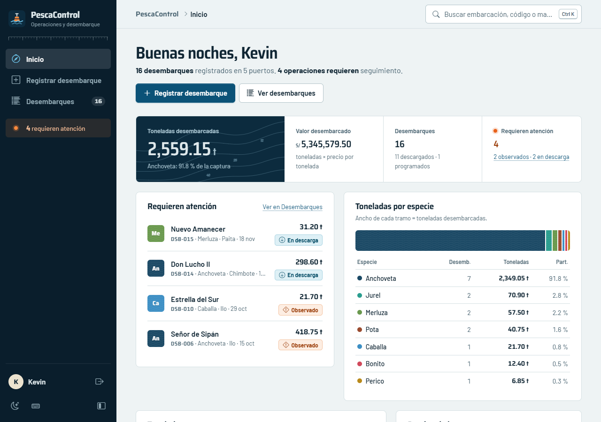
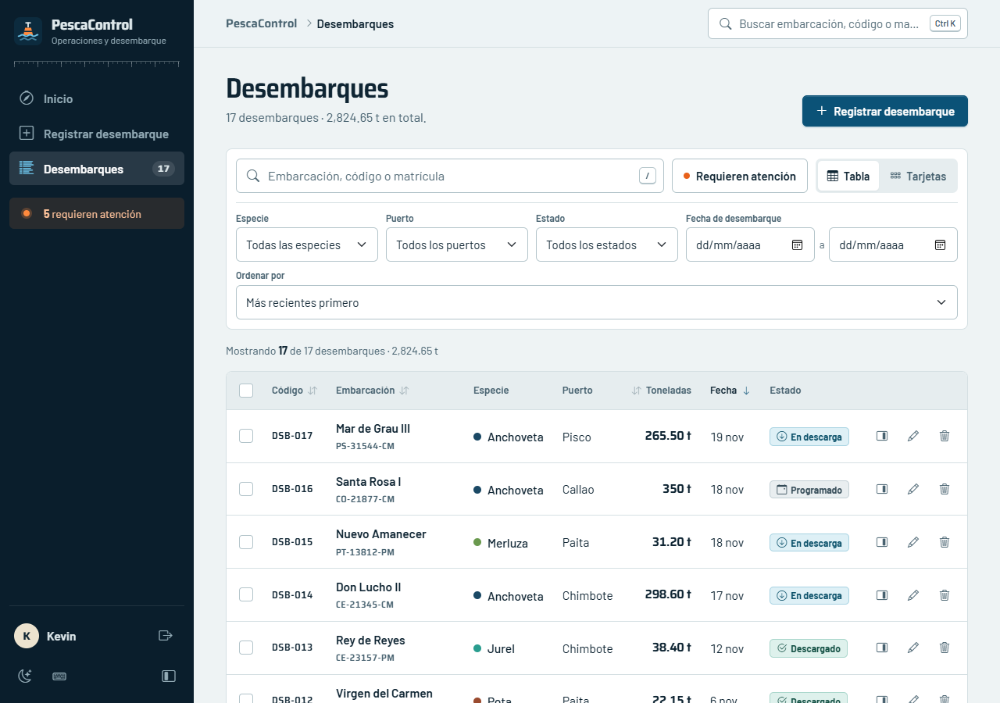
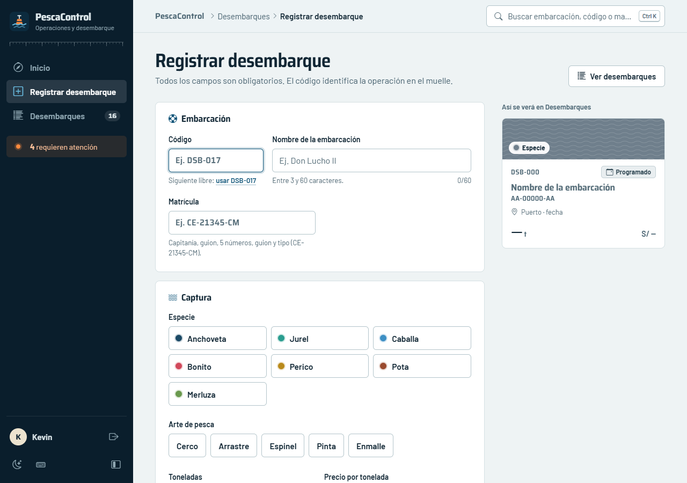
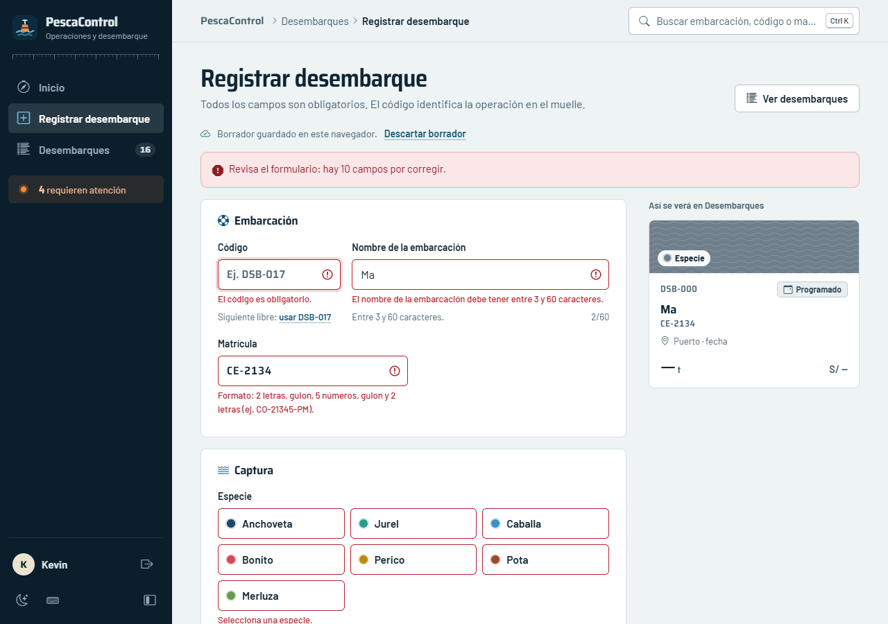
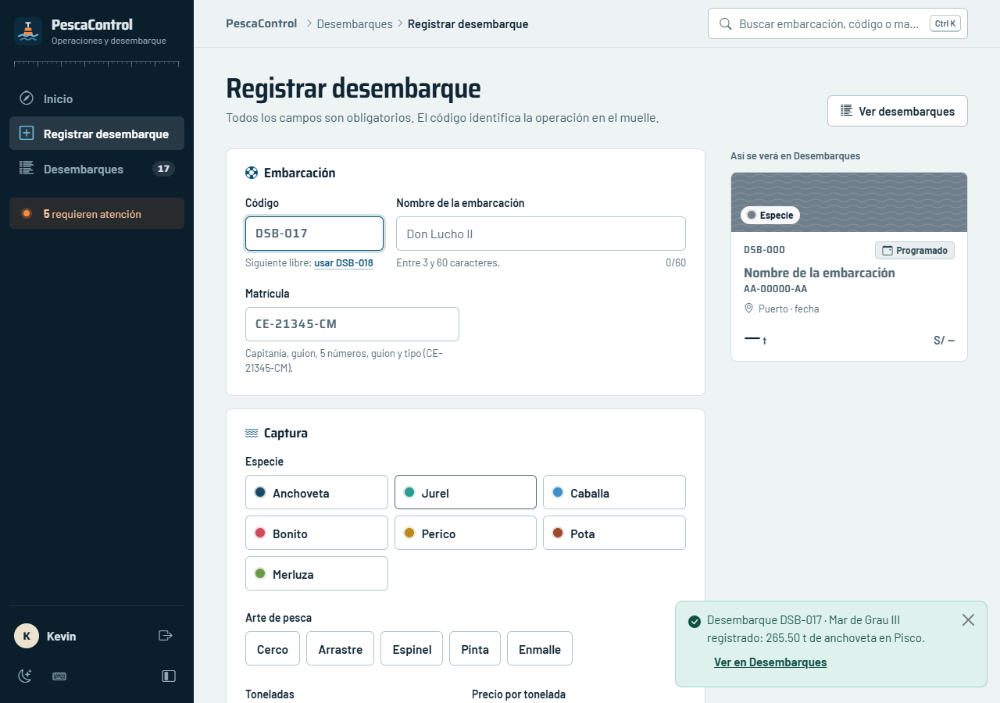
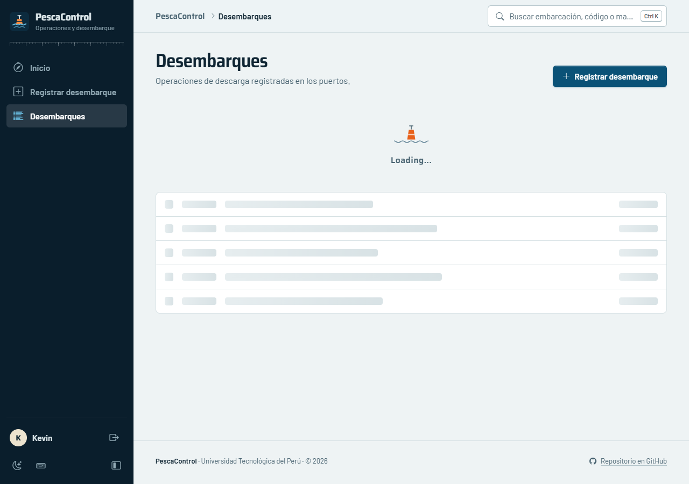
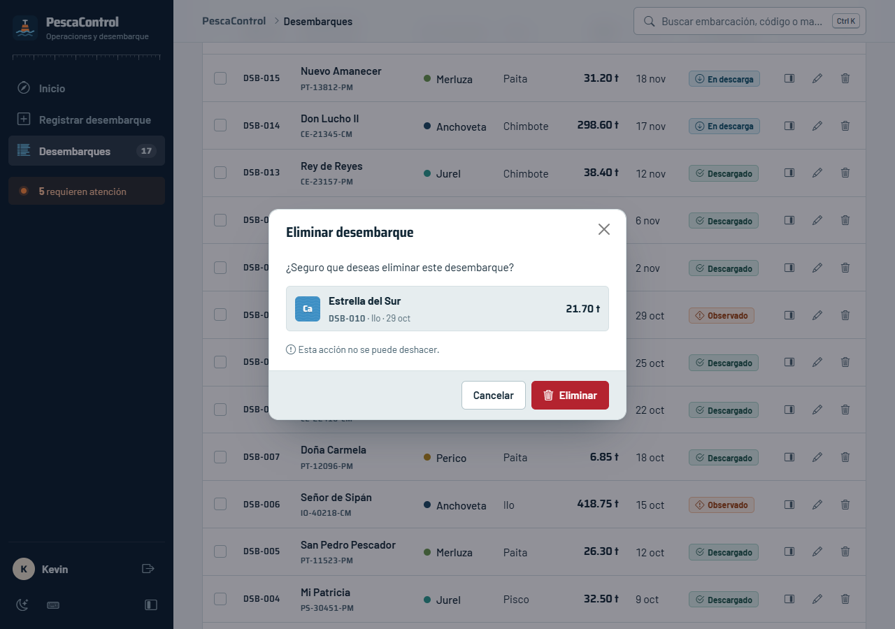
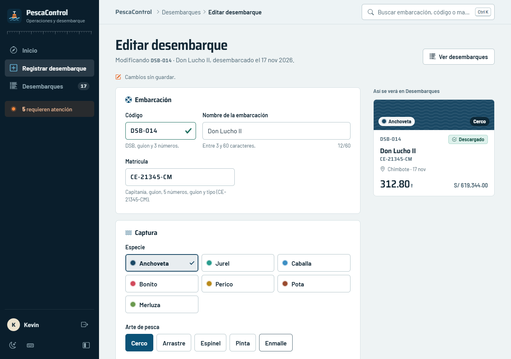
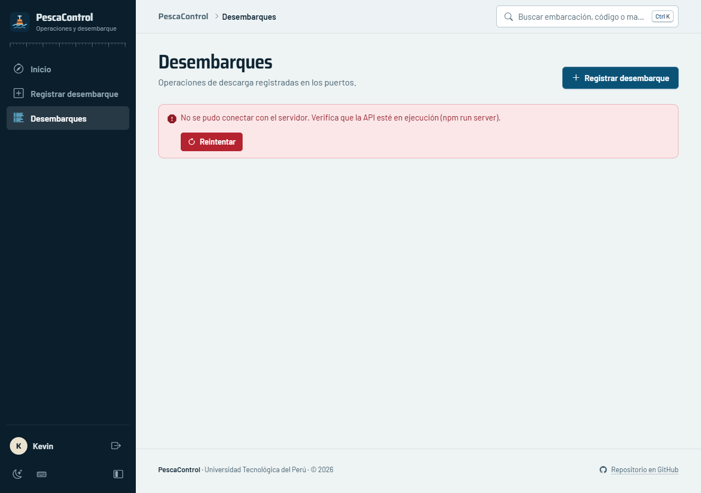
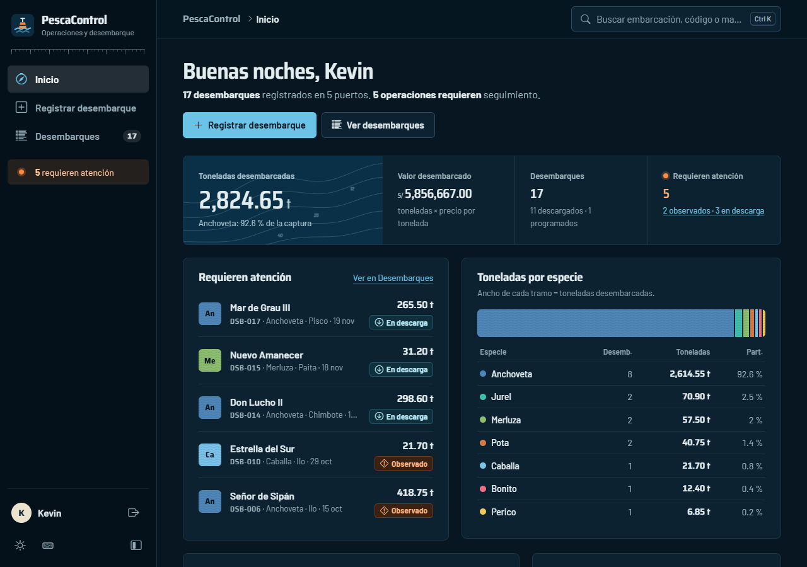
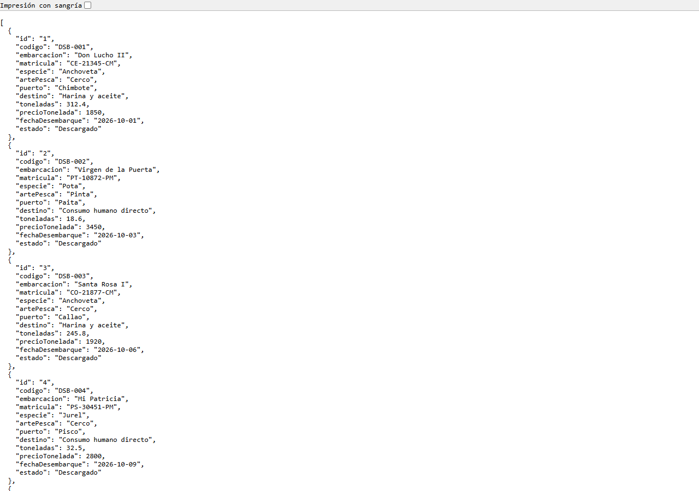
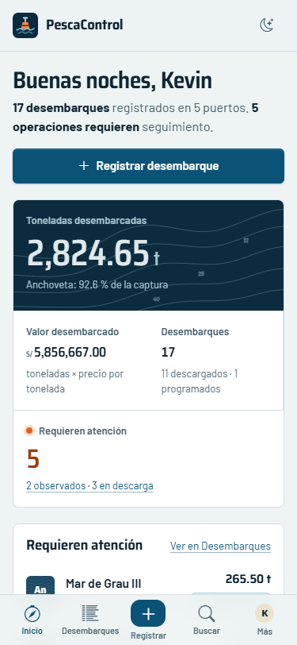
| Requisito de la práctica | Dónde se cumple |
|---|---|
| Proyecto React con Bootstrap | main.jsx, index.css |
| App con encabezado y título | App.jsx, Header.jsx |
| Rutas Home, Registro y Lista | App.jsx (react-router-dom) |
| Navbar con Link | Navbar.jsx (NavLink) |
| Formulario controlado y props | DesembarqueForm.jsx, Registro.jsx |
| Validación con alertas y estilos condicionales | DesembarqueForm.jsx, validarDesembarque.js |
| useState, useEffect, useRef, useContext | Páginas, DesembarqueForm.jsx, AppContext.jsx |
| Custom hook con localStorage | useLocalStorage.js |
| apiService con getAll, add, remove, update | services/apiService.js |
| Axios para listar y agregar | Lista.jsx, Home.jsx, Registro.jsx |
| Botón Eliminar con DELETE | Lista.jsx, ConfirmModal.jsx |
| Indicador Loading... | Loading.jsx |
| Mensajes de confirmación y error | AlertMessage.jsx |
| db.json con datos de prueba | 16 desembarques en db.json |
PescaControl integra los conceptos principales de React: componentes reutilizables
comunicados por props, rutas, formularios controlados con validación, y los hooks
useState, useEffect, useRef y
useContext, además de un custom hook para la persistencia local.
Concentrar las peticiones en apiService.js y los cálculos en funciones puras
permitió que las páginas no dependan de los detalles de Axios ni de las URL, y facilitó
mostrar estados de carga, indicadores de operación y mensajes de error uniformes. Bootstrap
aportó un diseño responsive y el tema oscuro sin librerías adicionales.
Para ejecutar el proyecto: npm install y luego npm run dev:all,
que levanta la API en el puerto 3001 y la aplicación en el puerto 5173.